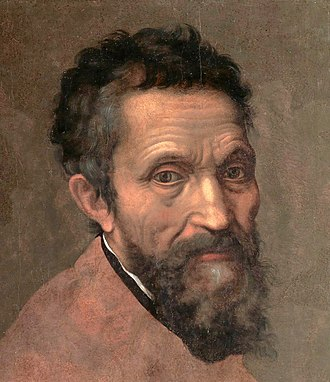

Michelangelo di Lodovico Buonarroti Simoni, known as Michelangelo was an Italian Renaissance artist who is widely considered to be one of the greatest artists of all time. He is best known for his sculptures such as Pieta and David, and his frescoes on the ceiling of the Sistine Chapel. He was also a prolific architect, poet and engineer and his works are found in many churches and public buildings throughout Italy.
Michelangelo was a great admirer of classical antiquity and was heavily influenced by the works of the ancient Greeks and Romans. He believed in the importance of the human form and the power of the individual, and his works often featured heroic figures and scenes from mythology. He was also a great innovator introducing new techniques and materials to sculpture and painting. Although he did not consider himself a painter, Michelangelo created two of the most influential frescoes in the history of Western art: the scenes from Genesis on the ceiling of the Sistine Chapel in Rome, and The Last Judgment on its altar wall.
Michelangelo's legacy is one of the most enduring in the history of art. His works have been studied for centuries, and his influence can be seen in the works of countless artists who followed him. His design of the Laurentian Library pioneered Mannerist architecture. His sculptures, paintings and architecture have become iconic symbols of the High Renaissance, and his influence can still be observed in the works of mordern artists in terms of composition, technique, and subject matter.
"The work has proved a veritable beacon to our art, of inestimable benefit to all painters, restoring light to a world that for centuries had been plunged into darkness. Indeed, painters no longer need to seek for new inventions, novel attitudes, clothed figures, fresh ways of expression, different arrangements, or sublime subjects, for this work contains every perfection possible under those headings."
Giorgio Vasari, Lives of the Artists: Michelangelo
Michelangelo was driven by a desire to create works of beauty in his own unique vision that would stand the test of time and be remembered for centuries. He was a devout Catholic, he believed that art was a form a divine expression and that the artist was merely a conduit for the divine. He believed that the artist is a tool of God, and that the artist's job was to bring the divine into the physical world.
Art is the expression of creativity and imagination through a variety of mediums. It allows us to explore and understand each other's ideas and emotions in new ways, creating a link between individuals, cultures, generations, and societies.
Michelangelo Buonarroti was an exception to the rule that the qualities of many brilliant artists and composers are realized and extolled only after death. He was recognized by contemporaries as a genius, a “Hero of the High Renaissance,” the only artist of whom it was claimed in his lifetime that he surpassed Antiquity.
Michelangelo di Lodovico Buonarroti Simoni was born on 6 March 1475 in Caprese, a small town outside Florence, which was at that time Italy's greatest centre for arts and learning. As a young boy, Michelangelo was sent to Florence to study grammar but it was of no intrest for him. During Michelangelo's childhood, a team of painters had been called from Florence to the Vatican to decorate the walls of the Sistine Chapel. Among them was Domenico Ghirlandaio, a master in fresco painting, perspective, figure drawing and portraiture who had the largest workshop in Florence. In 1488, at age 13, Michelangelo was apprenticed to Ghirlandaio. Click here to read further...

The Pietà is a key work of Italian Renaissance sculpture by Michelangelo Buonarroti, now in St. Peter's Basilica, Vatican City.
1498-1499
The Pieta is a subject in Christian art depicting the Virgin Mary cradling the dead body of Jesus after his body was removed from the cross. It is most often found in sculpture.
The sculpture, in Carrara marble, was made for the cardinal's funeral monument, but was moved to its current location, the first chapel on the right as one enters the basilica, in the 18th century. It is the only piece Michelangelo ever signed.
Moses is a sculpture by the Italian High Renaissance artist Michelangelo Buonarroti, housed in the church of San Pietro in Vincoli in Rome.
1513-1515
The figure depicts the biblical figure Moses with horns on his head, based on a description in chapter 34 of Exodus in the Vulgate, the Latin translation of the Bible used at that time.
Giorgio Vasari in the Life of Michelangelo wrote:
"Michelangelo finished the Moses in marble, a statue of five braccia, unequaled by any modern or ancient work..."